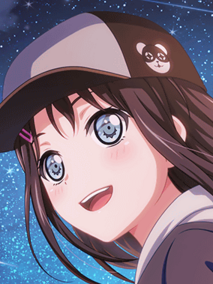

Hello, Happy World!, shortened as Harohapi, is one of the original 5 bands of the BanG Dream! Franchise. It is composed of members Tsurumaki Kokoro (Vocalist),
Seta Kaoru (Guitarist), Kitazawa Hagumi (Bassist), Matsubara Kanon (Drummer), and Okusawa Misaki or Michelle (DJ).
The concept of the band is to make the world smile. They often perform at pre-schools and children's hospitals which makes them popular among younger audiences.
‌Harohapi currently has 3 band stories in-game (currently 1 in EN servers) "Smiles To The World! Hello, Happy Union!", "I Need You!", and "niconiconnect!",
adding all up to 50 chapters.
MEDIA
Harohapi, just like the other 4 original bands of the franchise, was featured in all 3 seasons of the anime as well as GARUPA☆PICO where Kokoro was one of the singers for the theme songs of the mini-anime.
They were also featured in "BanG Dream! FILM LIVE" and in "BanG Dream! FILM LIVE 2nd Stage".
MEMBERS / CHARACTERS
Class: 2-B Birthday: August 8 Height: 155cm
Tsurumaki Kokoro (弦巻 こころ)
Tsurumaki Kokoro is the leader and vocalist of Harohapi. Her goal is to make the whole world smile. She is a bubbly, bright, idealistic, and
happy-go-lucky girl. She is extremely optimistic and positive but is also absentminded at times. She comes from a very rich family.
She is a 2nd year at Hanasakigawa Girls' High School. Her epithet is "Endless Waves of Smiles".
Class: 3-C Birthday: Feb 28 Height: 170cm
Seta Kaoru (瀬田 薫)
Seta Kaoru is the guitarist of Harohapi. She is widly popular among the ladies, calling them as her "kittens". She sees herself as a prince and the
other girls as princesses. She is flamboyant, pretentious, flirty, charistmatic, and can be quite extravagant. Prideful may also be a word to describe her,
but she is also a reliable person even outside the band. Chisato (Pasupare) is her childhood friend.
She is a 3rd year at Haneoka Girls' High School. Her epithet is the "Nonsensical One-man Show".
Class: 2-E Birthday: July 30 Height: 152cm
Kitazawa Hagumi (北沢 はぐみ)
Kitazawa Hagumi is the bassist of Harohapi. She is tomboyish, energetic, and cheerful. She is athletic and very passionate when it comes to sports, being the
captain of her local softball team. She is a sensitive girl and is very affectionate to her bandmates.
She is a 2nd year at Hanasakigawa. Her epithet is "Kitazawa Mark is the Mark of Vitality".
Class: 3-A Birthday: May 11 Height: 156cm
Matsubara Kanon (松原 花音)
Matsubara Kanon is the drummer of Harohapi. She is hardoworking, caring, and responsible but is also clumsy and has a bad sense of direction, often getting lost. She is also shy and
easily gets flustered. She can also easily get emotional. Kokoro invited her to the band first.
She is a 3rd year at Hanasakigawa. Her epithet is "Labyrinth of Jellyfishes".

Class: 2-A Birthday: October 1 Height: 157cm
Okusawa Misaki (奥沢 美咲)
Okusawa Misaki is a member of Harohapi who disguises as the mascot "Michelle". She is the DJ and composer of Harohapi (as Michelle) and the "agent" of Michelle (as Misaki).
She is the "normal" girl in the band and is laid-back. She is diligent, responsible, reserved, and kind. The other band members, besides Kanon, do not
believe that she and Michelle are the same person. She calls Kokoro, Kaoru, and Hagumi as "The Three Idiots".
She is a 2nd year at Hanasakigawa. Her epithet is "One with Common Sense in a Bear".
"Missheru da yooo~"
Michelle (ミッシェル)
Michelle (the disguised Misaki) is the DJ and composer of Harohapi. Misaki originally wore the costume at her part-time job and Kokoro dragged her to the band.
She even made up a story and personality for Michelle for The Three Idiots.
VOICE ACTRESSES / SEIYUUS
Nickname: Mikku Age: 25 Height: 155cm
Itou Miku (伊藤 美来)
Itou Miku, or Mikku, is the voice of Tsurumaki Kokoro. She was born on October 12, 1996. She passed the auditions in 2012 and became a trainee seiyuu while her solo career debuted
on her birthday in 2016. Her hobbies are watching anime, dancing, acting, and reading books. She also practices kendo, a Japanese martial art.
She is affiliated with Style Cube and a singer under Nippon Columbia.
Nickname: Koroazu Age: 28 Height: 158cm
Tadokoro Azusa (田所 あずさ)
Tadokoro Azusa, or Koroazu, is the voice of Seta Kaoru. She was born on November 10, 1993. She was inspired to become a seiyuu in middle school. She made her debut as a seiyuu
in 2012 and a singer in 2014. She likes karaoke, impersonating, cooking, sewing, arm wrestling, and tennis - which she has been playing since 5th grade.
She is a seiyuu under Horipro and a singer under Lantis.
Nickname: Yukichi Age: 29 Height: 151cm
Yoshida Yuri (吉田 有里)
Yoshida Yuri, or Yukichi, voices Kitazawa Hagumi. She was born on August 18, 1992. She debuted as a singer in 2013 before becoming a seiyuu in 2014. Her hobbies are
pretending to be an idol and visiting cafes. She also plays the piano and is skilled at skipping.
She is affiliated with sigma seven e:.
Nickname: Moeshi Age: 26 Height: 152cm
Toyota Moe (豊田 萌絵)
Toyota Moe, or Moeshi, voices Matsubara Kanon. She was born on March 15, 1995. She wanted to become a seiyuu since she was young. Just like Mikku, she passed the auditions of
Style Cube in 2012 and became a trainee. She plays the trumpet and was a member of her school's brass band in elementary. Her hobbies are dancing, reading manga, watching anime,
cloth designing, and shopping.
She is affiliated with Style Cube.
Nickname: Moyochi Age: 25 Height: 150cm
Kurosawa Tomoyo (黒沢 ともよ)
Kurosawa Tomoyo, or Moyochi, voices Okusawa Misaki. She was born on April 10, 1996. In 2000 (age 4), she began appearing in commercials, stage performances, and other media in television.
She debuted as a stage actress in 2003, a musical actress in 2005, and finally a seiyuu in 2010. She is skilled in many ways such as jazz and tap dancing, as well playing the
guitar. She also cooks and enjoys going to the theaters.
She is affiliated with Toho Entertainment.
DISCOGRAPHY
ORIGINAL SONGS:
Harohapi has 1 album titled "niconiconnect!" which was released on July 2021 and consists of 11 songs. The band has a total of 20 original songs.